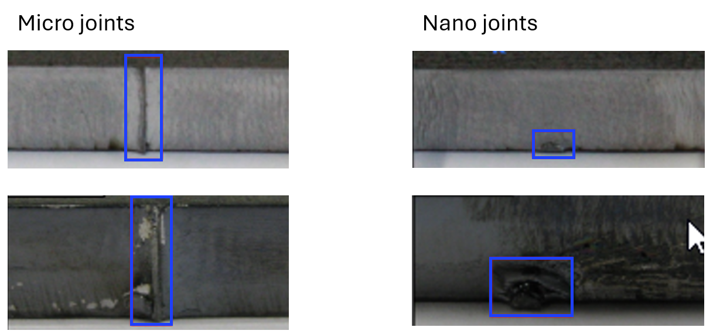
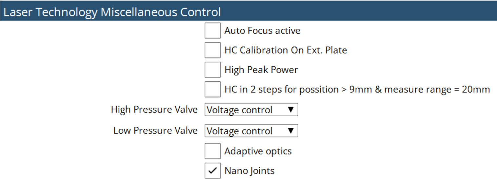
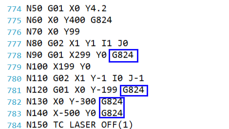
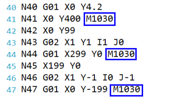

Nanojonctions
Les nanojonctions laser sont un type de technologie d’assemblage avancée qui utilise des faisceaux laser pour créer des connexions précises et solides qui sont réduites en profondeur. Elles accélèrent le processus car il est bien plus rapide de produire des petits points de rétention lors de la découpe plutôt que des micro languettes conventionnelles. Elles permettent également à l’opérateur de détacher les pièces de l’imbrication avec beaucoup moins d’effort. Cela économise du temps et facilite la vie des travailleurs. Dans la plupart des cas, les nanojonctions éliminent complètement la nécessité de travail de finition, car la marque qu’elles laissent lorsque les pièces sont détachées de l’imbrication est à peine visible. En revanche, les microjonctions laissent des violations de contour beaucoup plus évidentes qui doivent par la suite être corrigée manuellement par le personnel de production.

Pour activer la fonction Nanojonction, accédez à Réglages machine → Options API → Commande diverse de technologie laser.

Le paramétrage des nanojonctions se fait dans la page de tableau technologique laser.
La programmation au format LST se fait via M-Command G824.

La programmation au format DIN se fait via M-Command M1031.
